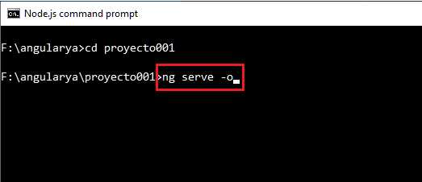

Las directivas *ngIf y *ngFor son atributos que podemos agregarle a los elementos HTML que nos permiten en el caso del *ngIf condicionar si dicha marca debe agregarse a la página HTML.
La directiva *ngFor nos permite generar muchos elementos HTML repetidos a partir del recorrido de un arreglo de datos.
Para analizar con un ejemplo estas directivas procederemos nuevamente a modificar el proyecto001.
En el archivo 'app.component.ts' procedemos a codificar la clase AppComponent con la definición de 3 propiedades:
import { Component } from '@angular/core';
@Component({
selector: 'app-root',
templateUrl: './app.component.html',
styleUrls: ['./app.component.css']
})
export class AppComponent {
nombre = 'Rodriguez Pablo';
edad = 40;
sueldos = [1700, 1600, 1900];
}
Hemos definido las propiedades nombre, edad y sueldos en la clase AppComponent:
export class AppComponent {
nombre = 'Rodriguez Pablo';
edad = 40;
sueldos = [1700, 1600, 1900];
}
Ahora procedemos a modificar el archivo app.component.html:
<div>
<p>Nombre del Empleado:{{nombre}}</p>
<p>Edad:{{edad}}</p>
<p *ngIf="edad>=18">Es mayor de edad.</p>
<table border="1">
<tr>
<td>Sueldos</td>
</tr>
<tr *ngFor="let sueldo of sueldos">
<td>{{sueldo}}</td>
</tr>
</table>
</div>
Ejecutemos nuestra aplicación desde la línea de comandos de Node.js:
En el navegador aparece el siguiente contenido:
La directiva *ngIf verifica la condición que indicamos entre comillas, en el caso de verificarse verdadero se agrega el elemento HTML 'p':
<p *ngIf="edad>=18">Es mayor de edad.</p>
Probemos de modificar la propiedad edad en la clase AppComponent por el valor 7:
export class AppComponent {
nombre = 'Rodriguez Pablo';
edad = 7;
sueldos = [1700, 1600, 1900];
}
Al recargar la página podemos comprobar que no aparece el mensaje contenido en dicho párrafo: 'Es mayor de edad.'
La directiva *ngFor nos genera posiblemente muchos elementos HTML repetidos, en este ejemplo una serie de filas de una tabla HTML:
<tr *ngFor="let sueldo of sueldos">
<td>{{sueldo}}</td>
</tr>
En cada repetición en la variable 'sueldo' se almacena una componente del arreglo 'sueldos'. De esta forma podemos mostrar los datos del arreglo mediante la directiva *ngFor.
La directiva *ngIf podemos plantear un else con la siguiente sintaxis:
<p *ngIf="edad>=18; else menor">Es mayor de edad.</p> <ng-template #menor><p>Es un menor de edad.</p></ng-template>
En el caso que la condición del *ngIf se verifique falso le indicamos con un else un nombre que debe luego especificarse en un elemento ng-template. Lo que disponemos dentro del elemento ng-template es lo que se muestra.